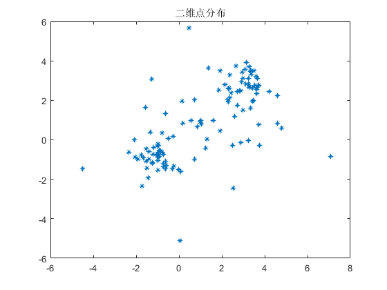
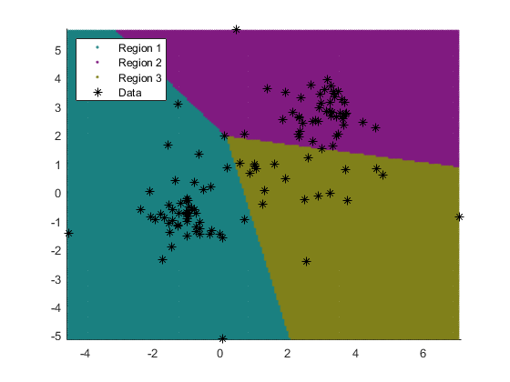
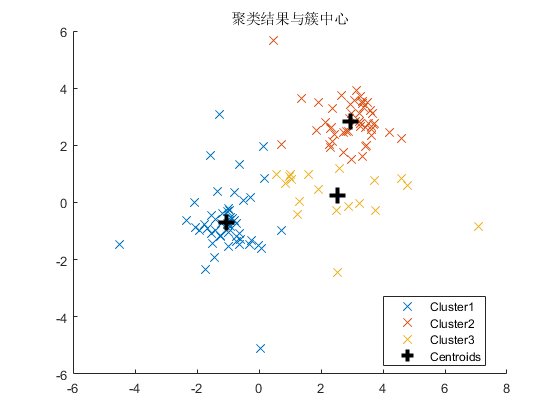

KMeans.m
Script by adqeor @XJTU
MATLAB内建 kmeans 聚类函数的demo. 生成数据集, 聚类后可视化.
可视化方法参考了 kmeans 函数的文档
History:
[rev0.1.2] 1 Feb. 2021:
重写了部分绘图代码, 增强面向对象范式, 以函数式替代部分指令代码;
引出绘图句柄, 便于绘图属性修改;
图形绘制指令变更为显示传递句柄;
[rev0.1.1] 1 Feb. 2021:
重建了文档;
建立版本系统, 备份;
[rev0.1.0] 5 Sept. 2020:
参照MATLAB Documentation的例子, 实现了k-means聚类和两种可视化;
Contents
测试数据生成
执行前准备
clc;
fprintf('使用MATLAB内建函数的k-means聚类\n测试数据发生\n');
N_points = 40;
rng(9);
DAT = [randn(N_points,2)*2+ones(N_points,2);
randn(N_points,2)*0.5-ones(N_points,2);
randn(N_points,2)*0.6+3*ones(N_points,2)];
f0 = figure('Name','聚类范例数据');
ax0 = axes(f0);
p0 = plot(ax0, DAT(:,1),DAT(:,2),'*','MarkerSize',5.2);
title(ax0, '二维点分布');
使用MATLAB内建函数的k-means聚类
测试数据发生

使用MATLAB内建函数进行k聚类
数据格式：输入 num x dim 的矩阵 DAT,
其中 num 为待分类点数, dim 为数据维度
给定聚类常数k
k = 3;
[idx,K_Cent] = kmeans(DAT,k);
结果可视化：区域填充
sep = .06;
x1 = min(DAT(:,1)):sep:max(DAT(:,1));
x2 = min(DAT(:,2)):sep:max(DAT(:,2));
[x1G,x2G] = meshgrid(x1,x2);
XGrid = [x1G(:),x2G(:)];
idx2Region = kmeans(XGrid,3,'MaxIter',1,'Start',K_Cent);
f1 = figure('name','K-means 聚类 区域填充可视化');
ax1 = axes(f1);
ax1.NextPlot = 'add';
gscatter(ax1, XGrid(:,1),XGrid(:,2),idx2Region,...
[.1,.5,.5; .5,.1,.5; .5,.5,.1],'..');
plot(ax1, DAT(:,1),DAT(:,2),'k*','MarkerSize',6.8);
xlim(ax1, [min(DAT(:,1))-sep,max(DAT(:,1))+sep]);
ylim(ax1, [min(DAT(:,2))-sep,max(DAT(:,2))+sep]);
legend(ax1, {'Region 1','Region 2','Region 3','Data'},'Location','Northwest');
警告: 未能在 1 次迭代后收敛。

结果可视化：点着色+中心显示
f2 = figure('Name','K-means 聚类 点着色可视化');
ax2 = axes(f2);
ax2.NextPlot = 'add';
colormap(f2, lines(6));
cmap = colormap;
legend_word = cell(1,k+1);
for i = 1:k
plot(ax2, DAT(idx == i, 1),DAT(idx == i, 2), 'x', 'MarkerSize',9, 'Color',cmap(i,:));
legend_word{i} = ['Cluster' num2str(i)];
end
legend_word{k+1} = 'Centroids';
plot(K_Cent(:,1),K_Cent(:,2), 'k+', 'MarkerSize',12, 'LineWidth',3);
legend(ax2, legend_word, 'Location','best');
title(ax2, '聚类结果与簇中心');
